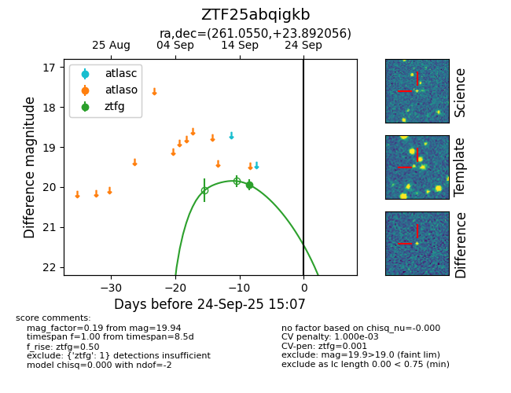
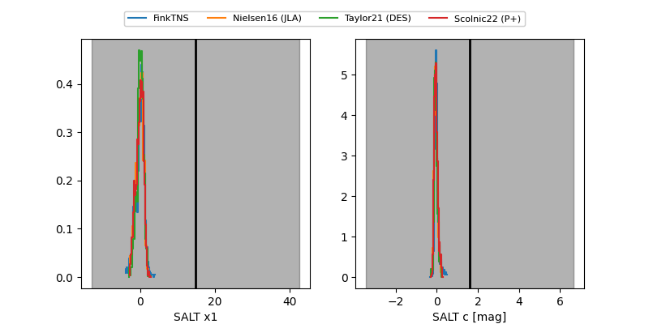

FINK: ZTF25abqigkb
Lasair: ZTF25abqigkb
ALeRCE: ZTF25abqigkb
ZTF25abqigkb (ztf,fink)
equatorial (ra, dec) = (261.0550,+23.89206)
galactic (l, b) = (46.5467,+29.13902)


last ztfg=19.94
1 ztfg detections